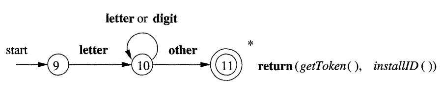
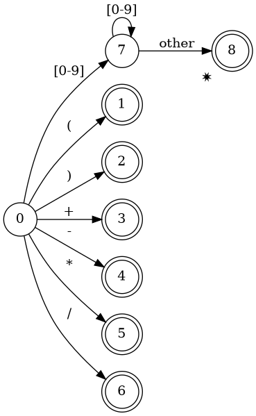
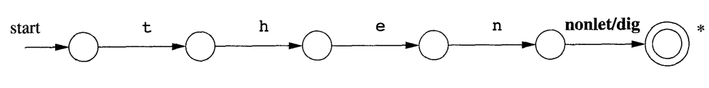
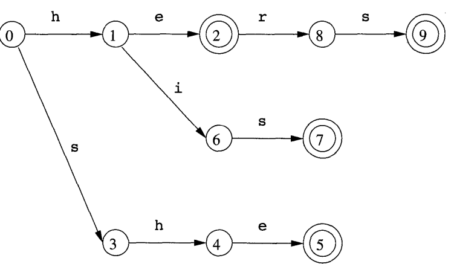
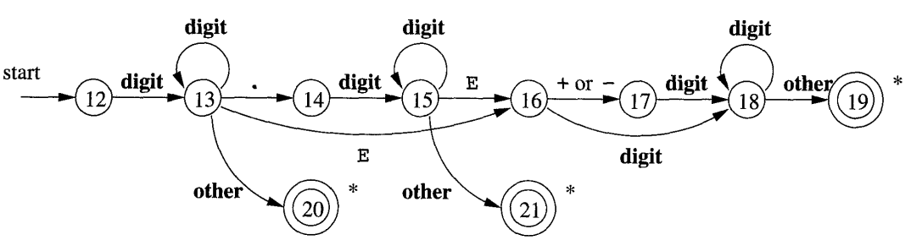
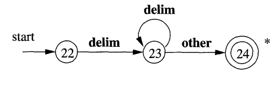
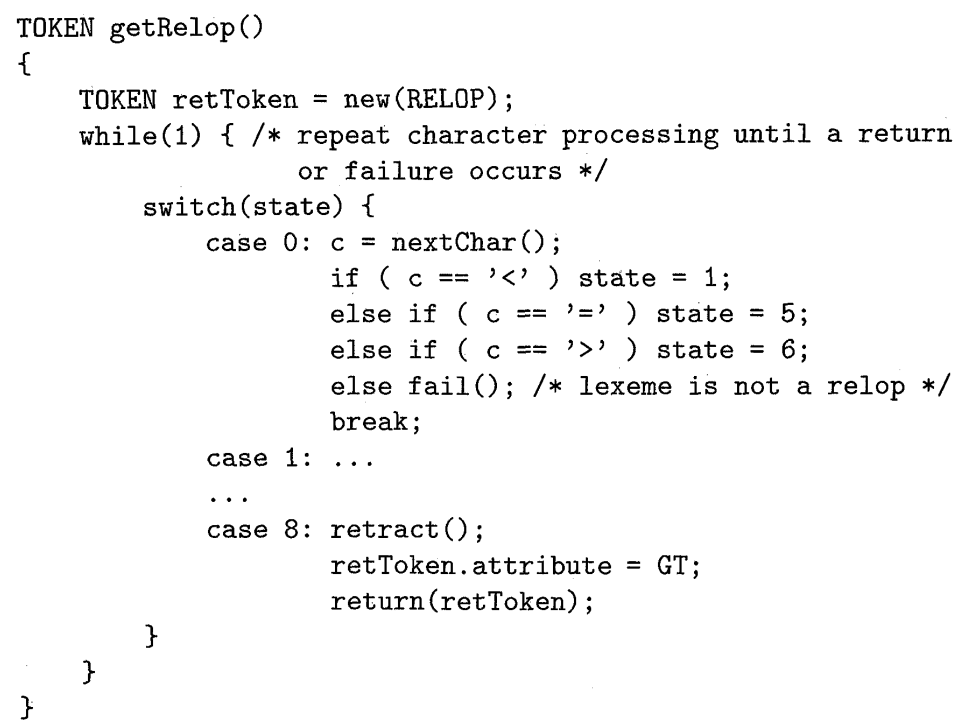

Lexical Analyzer
Tokenizer
Ahmad Yoosofan
Compiler course
University of Kashan
int a, b;
- { INT }
- { ID "a" }
- { COMMA }
- { ID "b" }
- { SEMICOLON }
b = 10; c = 24;
- {ID "b"}
- {ASSIGN}
- {INTEGER, 10}
- {SEMICOLON}
- {END_OF_LINE}
- {ID "c"}
- {ASSIGN}
- {INTEGER, 24}
- {SEMICOLON}
Ignoring Some Characters
- Depends on Language (c, c++, python)
- Depend on the place of the character (space at the end)
- White space characters (space, tab, new line)
- Old Fortran (Depends on the column of the character)
- Other Consideration (time consuming, memory, etc.)
Token
1 struct token { 2 tokenType t; 3 string s; 4 double x; 5 int a; 6 };
1 struct token { 2 tokenType t; 3 char s[256]; 4 double x; 5 int a; 6 };
1 struct token { 2 tokenType t; 3 char* s; 4 double x; 5 int a; 6 };
1 struct token { 2 tokenType t; 3 union { 4 char* s; 5 double x; 6 int a; 7 }; 8 };
1 struct token { 2 tokenType t; 3 union { 4 char* s; 5 double x; 6 int a; 7 }; 8 };
int a, b, count, x1;

Token Types
enum tokenType{ INTEGER, /* 25, 543, 1 */ DOUBLE, /* 2.45, 565.7 */ IDENTIFIER, /* x, count, power*/ IF, /* if */ WHILE, /* while */ OPEN_PARANTHESIS, /* ( */ CLOSE_PARANTHESIS, /* ) */ ASSIGN, /* = */ OPEN_CURLY_BRACKET, /* { */ CLOSE_CURLY_BRACKET, /* } */ OPEN_SQUARE_BRACKET, /* [ */ CLOSE_SQUARE_BRACKET,/* ] */ EQUAL, /* == */ LESS_THAN, /* < */ GREATER_THAN, /* > */ LESS_THAN_EQUAL, /* <= */ GREATER_THAN_EQUAL, /* >= */ COMMA, /* , */ SEMICOLON, /* ; */ END_OF_LINE, END_OF_FILE }
enum tokenType{ INTN, /* 25, 543, */ DBLN /* 5.444, 3344.4 */, ID, /* x, count, power*/ IF, /* if */ WHILE, /* while */ OP, /* ( */ CP, /* ) */ ASG, /* = */ OCB, /* { */ CCB, /* } */ OSB, /* [ */ CSB, /* ] */ EQ, /* == */ LT, /* < */ GT, /* > */ LTE, /* <= */ GTE, /* >= */ COM, /* , */ SEM, /* ; */ EOL, /* end of line */ EOI /* $ end of input */ }
enum tokenType{ INTN, /* 25, 543, */ DBLN /* 5.444, 3344.4 */, ID, /* x, count, power*/ IF, /* if */ WHILE, /* while */ OP, /* ( */ CP, /* ) */ ASG, /* = */ OCB, /* { */ CCB, /* } */ OSB, /* [ */ CSB, /* ] */ EQ, /* == */ LT, /* < */ GT, /* > */ LTE, /* <= */ GTE, /* >= */ COM, /* , */ SEM, /* ; */ EOL, /* end of line */ EOI /* $ end of input */ }
if(a==4){ a++; }
- {if}
- {OP}
- {ID, "a"}
- {EQ}
- {INTN 4}
- {CP}
- {OCB}
- {EOL}
- {ID "a"}
- {PLUS}
- {PLUS}
- {SEMI}
- {EOL}
- {CCB}
- {EOI}
More Samples
printf("Error");
- ID, printf
- OP,
- CS, Error
- CP,
- SEM
a = '"';
- ID, a
- ASG,
- CC, ''
- SEM,
a = 2; // slfjsl slkjfsl slkjf sdf b = a+21;/* dsf sdfs sdfs */ c = 323;
- ID, a
- ASG
- NINT, 2
- SEM
- ID, b
- ASG,
- ID, a
- PLUS,
- NINT, 21
- SEM,
- ID, c
- ASG,
- NINT, 323
- SEM
Some Issues
- >>
- i >> 2
- cin >> a;
- > >
- array<int,Node<int> >m1(10);
- array<int,Node<int>>m1(10);
- template<T, template<K> >
- template<T, template<K>>
1 array<int,Node<int> >m1; 2 int aa=12; Node<int> n1(&aa); 3 m1[n1]=44; 4 cout<<m1[n1]<<endl; 5 aa=4;m1[Node<int>(&aa)]=4; 6 cout<<m1[Node<int>(new int(4))]<<endl; 7 try{ 8 array<int,string,1> cm1; array<string,complexCls> am1; 9 cm1["ali"]=4; 10 cm1["Reza"]=7; 11 cout<<cm1["ali"]<<endl; 12 cout<<cm1["Reza"]<<endl; 13 am1[complexCls(3,4)]="Hamid"; 14 15 cout<<am1[complexCls(3,4)]<<endl; 16 cout<<cm1; cout<<am1; 17 }catch(...){cout<<"Error "<<endl;} 18 }
Writing Code
Applications of Lexical Analyzer
Relational Operators

ID

12 char buffer[200]; 13 int tindex =0; 14 15 void read(void){ 16 cout << "Enter: "; 17 cin.get(buffer, 200); 18 } 19 20 enum TokenType{ 21 INT, PLUS, MINUS, MUL, 22 DIV, OP, CP, EOI 23 }; 24 25 struct Token{ 26 TokenType type; 27 int n; 28 };
30 void printToken(Token t){ 31 cout<< "tindex: "<< tindex 32 << "\t type: " 33 <<typeString[int(t.type)] 34 <<"\t int "<< t.n << endl; 35 } 36 37 Token getToken(void); 38 39 int main(){ 40 Token t; read(); 41 do{ 42 t=getToken(); 43 printToken(t); 44 }while(t.type != EOI); 45 }
49 Token t; t.n = 0; 50 if(buffer[tindex] == '(') t.type = OP; 51 else if(buffer[tindex] == ')') t.type = CP; 52 else if(buffer[tindex] == '+') t.type = PLUS; 53 else if(buffer[tindex] == '-') t.type = MINUS; 54 else if(buffer[tindex] == '*') t.type = MUL; 55 else if(buffer[tindex] == '/') t.type = DIV; 56 else if(buffer[tindex] == '\0') t.type = EOI; 57 58 else if(buffer[tindex]>='0' && buffer[tindex]<='9'){ 59 t.type=INT; t.n = 0; 60 for(; buffer[tindex] >= '0' && buffer[tindex] <= '9'; tindex++) 61 t.n=t.n*10+buffer[tindex]-48; 62 tindex --; 63 } 64 else error("unknown character"); 65 tindex++; 66 return t; 67 }
9 enum TokenType{ 10 INT, PLUS, MINUS, MUL, 11 DIV, OP, CP, EOI 12 }; 13 struct Token{ 14 TokenType type; 15 int n = 0; 16 }; 17 18 void error(const string msg) 19 {cout<<msg<<endl; throw 0;} 20 21 class lexical{ 22 Token t; 23 char buffer[200]; 24 int tindex = 0; 25 26 public: 27 28 void read(void){ 29 cout << "Enter: "; 30 cin.get(buffer,200); 31 }
33 void printToken(Token t){ 34 cout<< "tindex: "<< tindex 35 << "\t type: " 36 <<typeString[int(t.type)] 37 <<"\t int "<< t.n << endl; 38 } 39 40 Token getToken(void); 41 }; 42 43 int main(){ 44 lexical lex1; 45 Token t; 46 lex1.read(); 47 do{ 48 t=lex1.getToken(); 49 lex1.printToken(t); 50 }while(t.type != EOI); 51 }
52 Token lexical::getToken(void){ 53 t.n = -1; 54 if(buffer[tindex] == '(') t.type = OP; 55 else if(buffer[tindex] == ')') t.type = CP; 56 else if(buffer[tindex] == '+') t.type = PLUS; 57 else if(buffer[tindex] == '-') t.type = MINUS; 58 else if(buffer[tindex] == '*') t.type = MUL; 59 else if(buffer[tindex] == '/') t.type = DIV; 60 else if(buffer[tindex] == '\0') t.type = EOI; 61 62 else if(buffer[tindex]>='0' && buffer[tindex]<='9'){ 63 t.type=INT; t.n = 0; 64 for(; buffer[tindex] >= '0' && buffer[tindex] <= '9'; tindex++) 65 t.n=t.n*10+buffer[tindex]-48; 66 tindex --; 67 } 68 else error("unknown character"); 69 tindex++; 70 return t; 71 }
Keywords(I)
then
Keywords(II)
English Words
Number
1, 322, 34.34, 34E3, 34E-3
Delimiter
Psudo Code

Symbol Table
a = 2 count = count + a
- ID, "a"
- ASG
- NINT, 2
- EOL
- ID, "count"
- ASG
- ID, "count"
- PLUS
- ID, "a"
- EOL
Name | Type | Value |
|---|---|---|
a | ID | |
count | ID |
- ID, 0
- ASG
- NINT, 2
- EOL
- ID, 1
- ASG
- ID, 1
- PLUS
- ID, 0
- EOL
Keywords in Symbol Table
Name | Type |
|---|---|
if | IF |
while | WHILE |
int | INT |
... | ... |
a | ID |
count | ID |
a = 2 count = count + a
a = 2\ncount = count + a\0
|a| |=| |2|\n|c|o|u|n|t| |=| |c|o|u|n|t| |+| |a|\0|
1 enum Type{ID,INT,DOUBLE,LT,LE,WHILE,IF, RETURN, ASG}; 2 struct Token{ 3 Type t; char *str; int i; 4 double d; int line,pos; 5 }; 6 class symboleTable{ 7 struct stCls{char name[32]; Type t;}; 8 public: int n; stCls table[2000]; 9 symboleTable(){n=0; 10 table[n].t=IF; strcpy(table[n++].name,"if"); 11 table[n].t=WHILE; strcpy(table[n++].name,"while"); 12 table[n].t=INT; strcpy(table[n++].name,"int"); 13 table[n].t=DOUBLE; strcpy(table[n++].name,"double"); 14 table[n].t=RETURN; strcpy(table[n++].name,"return"); 15 } 16 int search(char *bf, int begin, int end, Type &t1){ 17 int i=0; 18 for(i=0;i<n;i++){int j; 19 for(j=0;table[i].name[j];j++) 20 if(bf[begin+j]!= table[i].name[j]) break; 21 if(!table[i].name[j] && begin+j == end) 22 {t1=table[i].t; return i;} 23 } 24 for(i=0;begin+i<end;i++) table[n].name[i]=bf[begin+i]; 25 table[n].name[i]=0; t1=table[n].t=ID; n++; 26 return n-1; 27 } 28 };

1 #include <iostream> 2 #include <fstream> 3 #include <cstdlib> 4 #include <cstring> 5 #include <cctype> 6 using namespace std; 7 enum Type {IF,WHILE, INT,DOUBLE,RETURN, ID, LT,LE,ASG, END_INPUT}; 8 struct Token{Type t; char *str=nullptr; int i=0; int line,pos; 9 void print(void){cout << t << ":\t" << str << ":\t" << i << endl;} 10 }; 11 class symboleTable{ 12 struct stCls{ char name[32]; Type t;}; 13 public: int n = 0; stCls table[2000]; 14 symboleTable(){ 15 table[n].t=IF; strcpy(table[n++].name,"if"); 16 table[n].t=WHILE; strcpy(table[n++].name,"while"); 17 table[n].t=INT; strcpy(table[n++].name,"int"); 18 table[n].t=DOUBLE; strcpy(table[n++].name,"double"); 19 table[n].t=RETURN; strcpy(table[n++].name,"return"); 20 } 21 char* search(char *bf, int begin, int end, Type &t1){ int i,j; 22 for(i=0; i<n; i++){ 23 for(j=0; table[i].name[j] && begin+j <= end; j++) 24 if(bf[begin+j] != table[i].name[j]) break; 25 // cout << "begin+j: " << begin+j << "\t" << end << "\t" << bf[begin+j] << endl; 26 if(!table[i].name[j] && begin+j-1 == end) 27 {t1=table[i].t; return table[i].name; } 28 } 29 for(i=0;begin+i<=end;i++) table[n].name[i]=bf[begin+i]; 30 table[n].name[i]=0; t1=table[n].t=ID; n++; 31 return table[n-1].name; 32 } 33 void print(void){for(int i = 0; i < n; i++) cout << table[i].name << endl;} 34 };
35 class scanner{ static const int N=200000; public: 36 symboleTable smt; 37 char buffer[N]; int begin,end,lineno,pos; 38 scanner(const char *fileName="pr1.c"){ 39 ifstream f1(fileName); 40 if(!f1){cout<<"file"; throw 0;} 41 f1.seekg(0,ios::end); long long t1=f1.tellg(); f1.seekg(0,ios::beg); 42 f1.read(buffer,t1); f1.close(); begin=end=lineno=pos=0; 43 } 44 Token getToken(void){Token t; 45 for(;buffer[begin]==' ' || buffer[begin]=='\n'|| buffer[begin]=='\t'; begin++) 46 if(buffer[begin]=='\n') lineno++; 47 end=begin; 48 if(isalpha(buffer[begin]) || buffer[begin]=='_'){ end ++; 49 while(isalnum(buffer[end]) || buffer[end]=='_') end++; 50 end--; t.str=smt.search(buffer, begin, end, t.t); 51 } // cout<< buffer[begin] << " ::: " << buffer[end] << endl; 52 else if(isdigit(buffer[begin])){cout << " Unexpected numeric input: "; throw 1; } 53 else if(buffer[begin]=='"'){cout << " Unexpected quotation mark input: "; throw 1;} 54 else 55 switch(buffer[begin]){ 56 case '<': 57 end++; 58 if(buffer[end]=='=') t.t=LE; 59 else{end--;t.t=LT;} 60 break; 61 case '=': end++; t.t=ASG; break; 62 case 0 : t.t = END_INPUT; break; 63 default: cout << " Unexpected quotation mark input: "; throw 1; 64 } 65 pos=begin; if(t.t != END_INPUT) begin=++end; return t; 66 } 67 }; 68 int main(){Token t1;scanner s1;t1=s1.getToken(); 69 while(t1.t != END_INPUT){t1.print(); t1=s1.getToken();} 70 s1.smt.print(); 71 }
Memory Allocation
|
|
|
|
|
|
|
|
|
|
|
|
|
|
|
| \0 |
Name | Type | Value |
|---|---|---|
0 | IF | |
2 | WHILE | |
7 | INT | |
10 | ID | |
11 | ID |
Regular Expression
- 0|1|2|3 : 0 or 1 or 2 or 3
- [0123] : 0 or 1 or 2 or 3
- [0-3] : 0 or 1 or 2 or 3
- [-03] : 0 or - or 3
- (abc) : Capture group abc
- (a|b) : Match a or b
- . : Any character, except newline
- \. \* \\ \t \n \r \-
- [0\-3] : 0 or - or 3
- \w : Word
- \d : digit
- ^ : start of String
- ^abc : Start with abc
- $ : End of string
- abc$ : End with abc
- [ \t] : space or tab
- [\n\t] : new line or tab
- a+ : Match 1 or more a
- [0-9]+
- a* : Match 0 or more a
- [a-zA-Z_][a-zA-Z_]*
- [a-zA-Z_]+
- a? : Match 0 or 1 of a
- if(def)?
- [0-9]+(\.[0-9]+)?
- a{3} : Match exactly 3 , aaa
- a{1,3} : Match between 1 and 3
- a{,3} : Match up to 3
- a{3,} : Match 3 or more
- [^abc] : Any character except a, b or c
- [^\n] : . , scanf("[^\n]", st);
- [a^c] : one of: a ^ c
- a/b : a when followed by b
- (abc)/(xyz) : abcsldsxyzss , abcsldsxzss ×
- (https?|ftp):/(/[^/\r\n]+)+/?
Some References of Regular Expression
- https://stackoverflow.com/a/3513858
- https://web.cs.hacettepe.edu.tr/~bbm301/lectures/lecture3_lex.pdf
- https://devhints.io/regexp
- https://web.mit.edu/hackl/www/lab/turkshop/slides/regex-cheatsheet.pdf
- https://developer.mozilla.org/en-US/docs/Web/JavaScript/Guide/Regular_Expressions/Cheatsheet
- https://developer.mozilla.org/en-US/docs/Web/JavaScript/Guide/Regular_Expressions/Cheatsheet#character_classes
- https://www.rexegg.com/regex-quickstart.html
- https://cheatography.com/davechild/cheat-sheets/regular-expressions/
Online Regular Expression Tools
- https://regex101.com/
- https://regexr.com/
- https://www.regextester.com/
- https://www.freeformatter.com/regex-tester.html
- https://extendsclass.com/regex-tester.html
- https://www.debuggex.com/
- https://developer.mozilla.org/en-US/docs/Web/JavaScript/Reference/Global_Objects/RegExp/test
- https://appdevtools.com/regular-expression-tester
- https://www.regular-expressions.info/javascriptexample.html
- https://ihateregex.io/
Regular Expression in Programming(re/regex)
- Python
- https://docs.python.org/3/library/re.html
- https://www.tutorialspoint.com/python/python_reg_expressions.htm
- https://www.w3schools.com/python/python_regex.asp
- https://developers.google.com/edu/python/regular-expressions
- https://www.programiz.com/python-programming/regex
- https://realpython.com/regex-python/
- https://www.geeksforgeeks.org/regular-expression-python-examples-set-1/